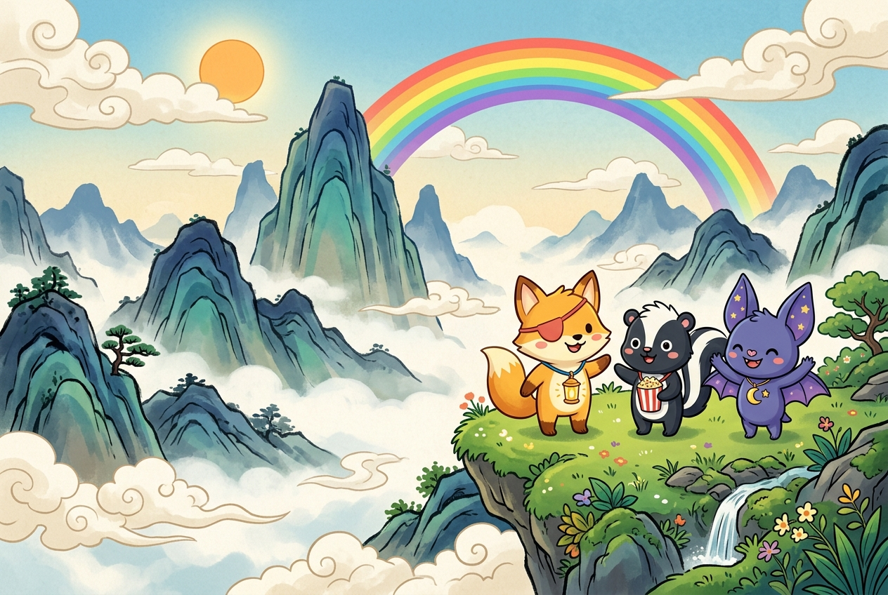

Page 1 / 30  Act I • The Sacred Vine & Seven Gourds 第一页：葫芦仙山映彩虹 · 守护一家乐融融 1. Rainbow Over Calabash Mountain 🌙 Chuyu (LunaBat) • ☀️ Mom (SunnyFox) • 🍿 Dad (PoppyDash) Guardians of Calabash Mountain & The Seven Rainbow Gourds